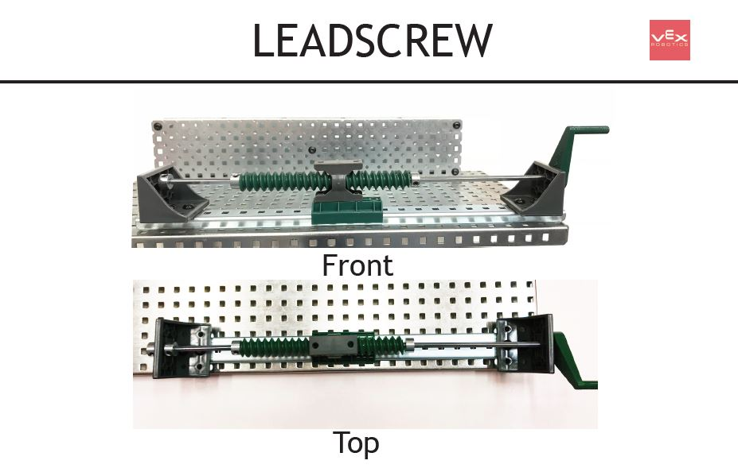
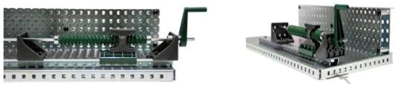
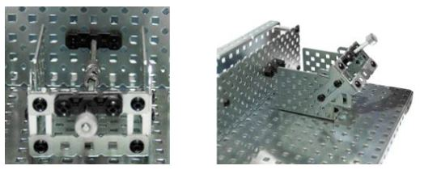
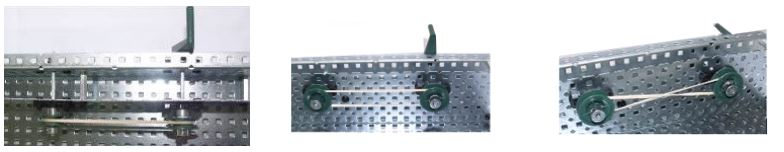
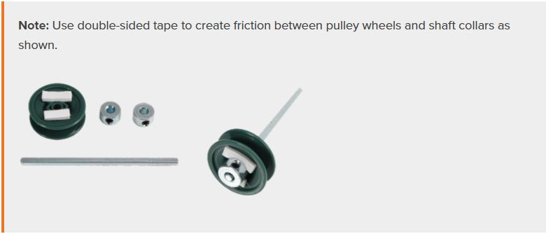
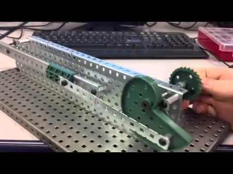
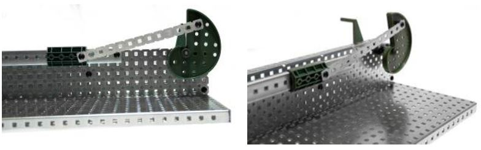
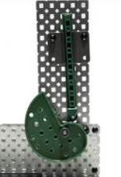
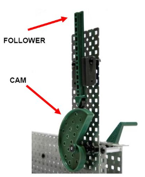
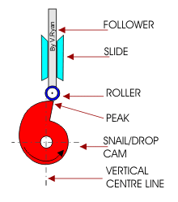

Build the motion-converting mechanisms, then name the motion. These are the five mechanism builds for Activity 2.1 — the real VEX build photos, animations, and a video of each one working. For each, name the motion IN and the motion OUT.
Build your assigned mechanism, watch it move (animation + ▶ video), then fill that mechanism's row in the Evidence Chart in your Google Doc deliverable, with a captioned photo of your build. The numbered Conclusion Questions are answered separately at the end of the deliverable.
▶ MythBadger — VEX Gear Tutorials (VEX EXP, 24 videos)
These motion-converting mechanisms are all covered in MythBadger’s VEX Gear Tutorials — a step-by-step Building a… and Examining a… video for each, built with VEX EXP parts. Each mechanism below links its build video; or play the whole 24-video playlist:
Leadscrew
Rotary in → linear out
Build it


▶ VEX build video — MythBadger: Building a Lead Screw
Fill this mechanism’s row in the Evidence Chart in your Google Doc deliverable — these are the columns to complete (Conclusion Questions are answered separately):
- Motion in → motion out
- Turns of the crank to move the block 1 inch
- Reversible? (push the block to turn the screw?)
- Which is increased — force or speed?
- Direction reversible?
- Where it's used (example)
Universal Joint
Rotary in → rotary out · through an angle
Build it

▶ VEX build video — MythBadger: Building a Universal Joint
Fill this mechanism’s row in the Evidence Chart in your Google Doc deliverable — these are the columns to complete (Conclusion Questions are answered separately):
- Angular range where it works
- Speed ↑↓= and torque ↑↓=
- Speed ratio input : output
- Reversible?
- Same direction, input and output?
- Where it's used (example)
Belt Drive
Rotary in → rotary out · across a distance
Build it


▶ VEX build video — MythBadger: Building a Belt Drive
Fill this mechanism’s row in the Evidence Chart in your Google Doc deliverable — these are the columns to complete (Conclusion Questions are answered separately):
- Drive vs. driven pulley; angle of input to output
- Predicted / measured ratio
- Speed ↑↓= and torque ↑↓=
- Effect if the drive pulley is larger; what if the belt is crossed?
- Same or opposite direction?
- Where it's used + why a belt vs a chain
Crank and Slider
Rotary in → reciprocating out
Build it


▶ VEX build video — MythBadger: Building a Crank & Slider
Fill this mechanism’s row in the Evidence Chart in your Google Doc deliverable — these are the columns to complete (Conclusion Questions are answered separately):
- Motion in → motion out
- Distance the slider moves per crank revolution
- If the crank gear were larger, shorter or longer travel?
- Reversible? (push the slider to turn the crank?)
- Direction reversible?
- Where it's used (example — not a train)
Cam and Follower
Rotary in → reciprocating out
Build it


▶ VEX build video — MythBadger: Building a Cam & Follower
See it in motion

Fill this mechanism’s row in the Evidence Chart in your Google Doc deliverable — these are the columns to complete (Conclusion Questions are answered separately):
- Motion in → motion out
- Times the follower rises/falls per crank revolution
- Reversible? (push the follower to turn the crank?)
- Direction reversible?
- Speed / torque notes
- Where it's used (example)
Build photos & motion clips from the Stauffer MS Mechanical Gears / Mechanisms procedures deck (VEX EXP). Step-by-step build videos from Mythbadger Videos — VEX Gear Tutorials playlist. Animated diagrams by V. Ryan / technologystudent.com. Videos are external (YouTube); links open in a new tab.